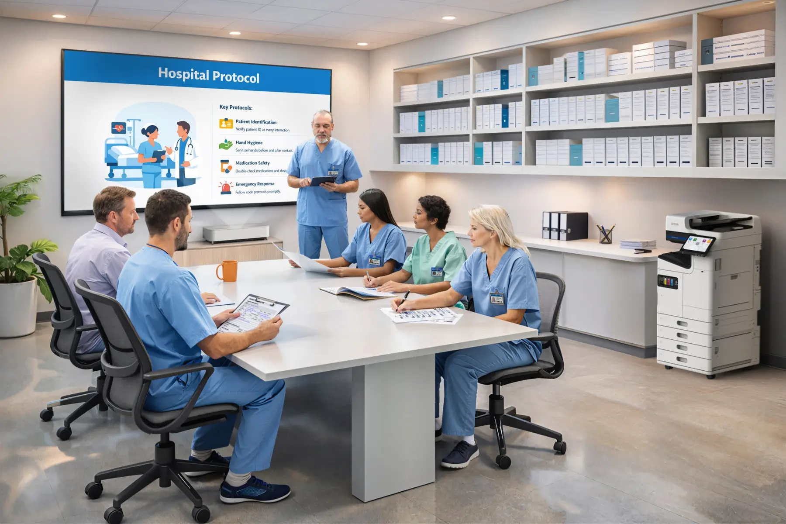

AM-C4000
A3 color capability for departments and shared environments requiring a compact enterprise platform.
Copiers & Enterprise Multifunction Systems
Matrix helps organizations choose multifunction systems by workload, workflow, security, usability, continuity, and support requirements rather than specifications alone.
Core Epson Enterprise Family
A3 color capability for departments and shared environments requiring a compact enterprise platform.
A balanced enterprise system for organizations that need productive color output, scanning, and flexible paper handling.
Higher-speed A3 color output for active departments, healthcare, campuses, and demanding shared workflows.
All three support A3 output and optional finishing configurations. Matrix helps determine which speed and configuration fit the actual environment.
Application Fit
The AM-Series uses PrecisionCore Heat-Free technology to deliver fast first-page output, lower power consumption, and a simplified imaging architecture. The value is not the technology name. It is what the engineering changes for the operation.

Why Local Capability Is Reasonable
PrecisionCore changes the engineering first. InPower then limits customer actions to clear, guided recovery while Matrix retains responsibility for escalation.
What Replaces the Complexity
A small electrical current flexes piezoelectric elements to eject ink through microscopic nozzles. The imaging process does not require a fuser, photoreceptor drum, transfer belt, or plastic toner powder.
Fewer process stages and fewer maintenance parts mean fewer reasons for conventional mechanical intervention. That is what makes guided local recovery credible.
The simplified imaging architecture eliminates several heat-based process stages and associated maintenance parts.
Users identify conditions at the screen and perform only clear recovery or replacement actions defined by the model.
Anything outside the defined boundary follows an understood escalation path. Local capability does not become someone’s second job.
Process and engineering comparison based on Epson’s published descriptions of PrecisionCore technology and Heat-Free design.
Engineering Outcome
Epson's Heat-Free design addresses energy use, consumables, waste, and warm-up at the source rather than compensating after the fact.
Up to 86% less electricity
AM-C5000 compared with color laser printers.
Up to 53% less waste
AM-C5000 compared with color laser printers.
Comparisons and qualifications are provided in Epson's resource and its cited Keypoint Intelligence evaluation. Results vary by device and use.
Tell us what you are replacing, how it is used, and what is not working today. We will help narrow the decision.